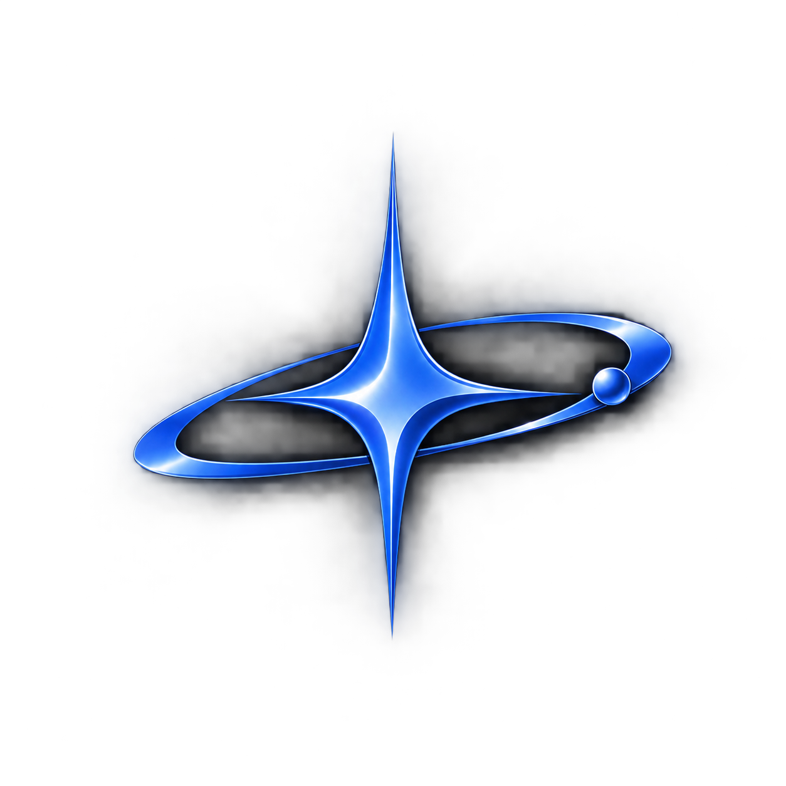

The team
High school students working on electronics, structure, programming, and data analysis.

J. Matias Lancheros H

Aleix Vallbona

Eloi Castaño

Name TBD

KAIPERA high school CanSat team. We're building a mini-satellite to explore, during its descent, whether an environment could support liquid water.
Hi, I'm Matias. This whole project started with a name before it started with a sensor. "Kai" means ocean in Hawaiian, and it's a name I've always loved. When I learned that the Kuiper Belt might hide oceans under its ice, in a place nobody could see, it felt exactly like what our CanSat should go looking for. So Kaiper isn't just a science mission to me — every reading it sends back on the way down is us asking, in our own small way, whether there's an ocean hiding somewhere nobody's checked yet.
Just as the Kuiper Belt hides oceans beneath its icy surface, the atmosphere hides its own invisible ocean. Our CanSat crosses it and measures it in three layers of data during descent.
Humidity, temperature, and UV radiation combined into a custom score that rates each stage of the descent.
An inertial sensor (IMU) tracks the stability of the descent — the same data that matters in real parachute and reentry system design.
We measure how background radiation changes with altitude — the same question astrobiologists ask about whether the ice on Kuiper Belt objects could shield a subsurface ocean.
High school students working on electronics, structure, programming, and data analysis.
Companies supporting team Kaiper.